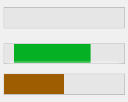
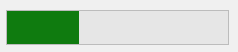
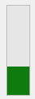

ProgressBarEx control
The ProgressBarEx control is an extended version of the WinForms ProgressBar control that provides all the features of the Win32 ProgressBar.

Range
To set the range of the progress bar, use the Maximum and Minimum properties. To set the value of the progress bar, set the Value property:
progressBarEx1.Minimum = 0;
progressBarEx1.Maximum = 250;
progressBarEx1.Value = 125;
Progress Bar Types
A progress bar type is the type of movement of the progress bar. It can be one of the following values:
MarqueeBlocksSmooth
Marquee makes the progress bar act like a marquee, where the progress portion of the bar repeatedly moves along the bar. The Blocks type moves the progress bar in small blocks until it reaches the destination value. Smooth smoothly moves the progress bar to the target value.
To set the progress bar type, use the Type property on the ProgressBarEx control:
progressBarEx1.Type = ProgressBarExType.Marquee;
Reverse on Backward
If you're using a ProgressBarEx type of either Smooth or Blocks, by default, the bar will snap to the target value if the new value is smaller than the previous value. If you want to make the progress bar perform the normal movement animation even when going backwards, set the ReverseOnBackward property to true to re-enable the behavior.
Orientation
A ProgressBarEx control can be in one of 2 orientations:
- Horizontal
 - Vertical

To set the orientation, use the Orientation property:
progressBarEx1.Orientation = Orientation.Vertical;
Style
Warning
Requires visual styles. Make sure that Application.EnableVisualStyles is inside your Program.Main function.
A ProgressBarEx can be styled for a normal, paused or error bar. To set the style, use the Style property:
progressBarEx1.Style = ProgressBarExStyle.Error;
Colors
Note
Most visual styles override these colors, meaning that these changes may not apply if your app uses visual styles.
You can customize the bar color using the ForeColor property and the background color using the BackColor property.
Steps
You can step a ProgressBarEx control by a specified amount. The PerformStep function will step the progress bar by the amount of the Step property:
progressBarEx1.Step = 10;
// steps the progress bar by the step amount and wraps it around if it exceeds the range
progressBarEx1.PerformStep();
On the other hand, the StepBy function will step the progress bar by a specific amount:
// note: does not wrap around!
progressBarEx1.StepBy(25);